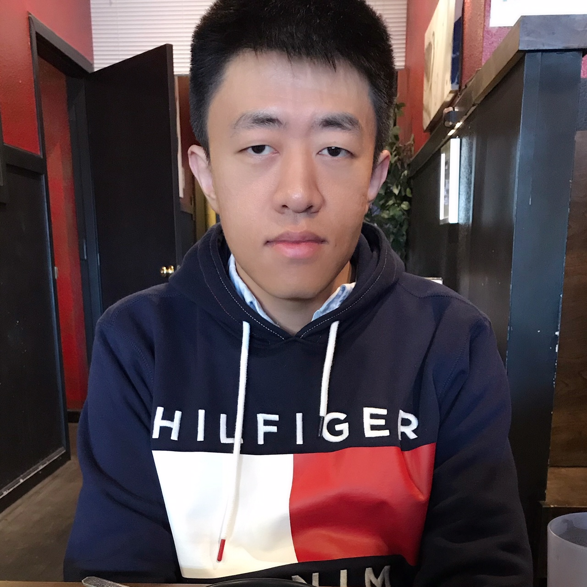

|
Dong Yin
|
 |
Research Scientist
DeepMind, Mountain View, CA
Email: yindong10 at gmail dot com
Link to: [Google Scholar]
|
About me
I am a research scientist at DeepMind, Mountain View, CA. My research interests are in machine learning.
In 2019, I got my PhD from the EECS Department at UC Berkeley, where I worked with Prof. Kannan Ramchandran, and Prof. Peter Bartlett. As an intern, I worked in Google Research in the summer of 2016 and 2017, and in Google Brain in spring 2019. Before coming to Berkeley, I got my B.S. from Tsinghua University in 2014.
|